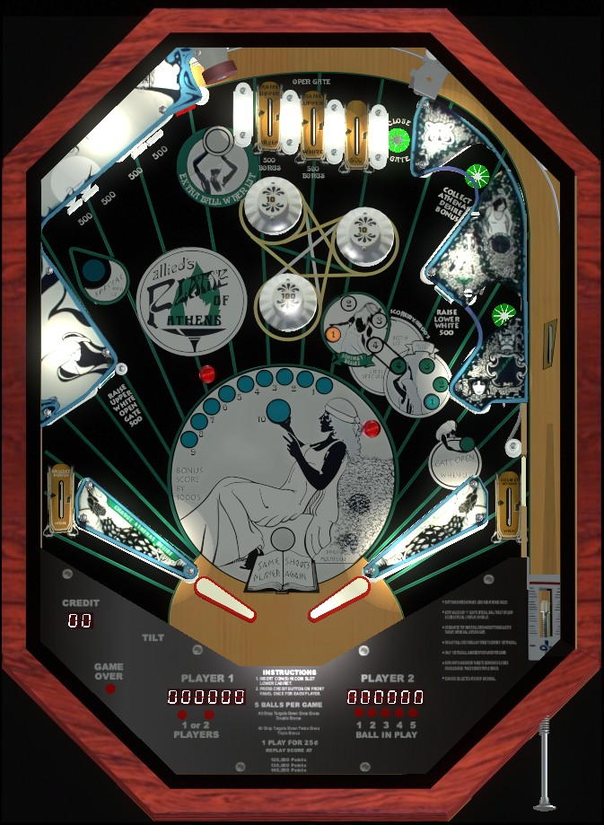

These two games have identical rules, playfields, scoring, and art, despite the different names.
From the left flipper, shoot the star rollover lane in the upper right, which curves underneath the plastics on the right side of the game and collects the Athena and Juno bonuses before directing the ball to the right flipper. From the right flipper, shoot drop targets in the upper left to work toward bonus multipliers, or build the bonus itself with the red standup target.
The below picture of Flame of Athens' playfield was taken from the VPX recreation by Itchigo et al.

The leftmost top lane scores 500 points and a bonus advance, and raises the upper "green" drop target. The second top lane scores 500 points and a bonus advance, raises the upper white drop target, and opens the free ball gate in the right out lane. The third top lane scores 500 points and nothing else. The rightmost top lane scores 10 points and closes the right out lane gate if it is open.
The 1-2-3-4 inserts depict the status of the Athena (white inserts) and Juno (green inserts) bonuses. To start each ball, both bonus is at 1. Each hit to the left slingshot increases the Athena bonus by 1, and each hit to the right slingshot increases the Juno bonus by 1. Advancing either bonus past 4 resets it to 1. Collecting the Athena or Juno bonus scores 1,000 points times the currently lit number and resets that bonus back to 1. Athena's bonus is collected at the upper right star rollover or left out lane. Juno's bonus is collected at the middle right star rollover or right out lane. Shooting either star rollover lane on the right will redirect the ball over the right in lane entrance and toward the right flipper.
When both the Athena and Juno bonuses are at 4, the u-turn in the upper left that goes around the white drop targets is lit for Special. This Special can score an extra ball or a free game, and collecting it resets both bonuses to 1.
There are two pairs of drop targets in the upper left: the left pair is the white targets, and the right pair is referred to as the green targets even though they are usually reddish-gray. Each target down scores 500 points. Each target can be individually raised: the lower white target is raised by the middle right standup target, the upper white target is raised by the middle left standup target or second top lane, the lower green target is raised by the exit to the Athena and Juno bonus lanes on the right, and the upper green target is raised by the leftmost top lane. Raising individual drop targets is not desirable; instead, try to have all 4 drop targets down at once, as this well reset all 4 drop targets and advance the bonus multiplier, first to 2x, then to 3x.
Scores 1,000 points and a bonus advance. On the final ball of the game, this target is lit for extra ball. Only one extra ball per game can be earned from this target.
When open, the right out lane gate redirects the ball back to the shooter lane for a replunge. The gate is opened by making the second top lane from left or shooting the middle left standup target. The gate is only closed by making the rightmost top lane; using the gate does not close it.
The two upper pop bumpers always score 10 points, and the lower pop bumper always scores 100.
The white bullseye standup targets on the middle left and middle right score 500.
The left orange rollover button scores 10 points, and the right orange rollover button scores 500.
There are no in lanes. Flippers back up directly to the slingshots. Slingshots score 10 points and rotate the value of the Athena (left) or Juno (right) bonuses. Out lanes score a bonus advance as well as the current Athena (left) or Juno (right) bonus value.
Bonus is advanced by the two left top lanes, the u-turn in the upper left, the right star rollovers that collect the Athena and Juno bonuses, and the red standup target. Having all 4 drop targets down at once qualifies 2x bonus the first time, and 3x bonus for doing it a second time on the same ball. Max bonus is 3x 10,000 = 30,000 points. No part of the bonus can be collected mid-ball or carried to the next ball. The first bonus advance is not given for free, so it is possible to drain with 0 bonus.
Special can be set to score extra ball instead of a free game. There appears to be no way to disable extra balls outright, and extra balls and Specials have no way to be set to score points instead.